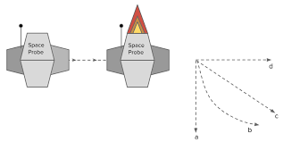
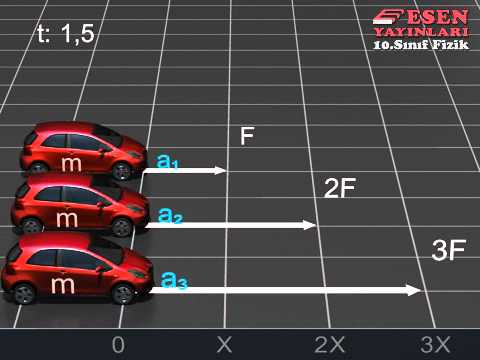
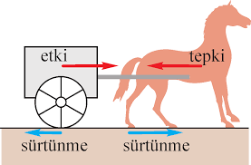

Newton Hareket Yasaları
1. Yasa

Eylemsiz referans sistemi adı verilen öyle referans sistemleri seçebiliriz ki, bu sistemde bulunan bir parçacık üzerine bir net kuvvet etki etmiyorsa cismin hızında herhangi bir değişiklik olmaz. Bu yasa genellikle şu şekilde basitleştirilir: “Bir cisim üzerine dengelenmemiş bir dış kuvvet etki etmedikçe, cisim hareket durumunu (durağanlık veya sabit hızlı hareket) korur.”
2. Yasa

Eylemsiz bir referans sisteminde, bir parçacık üzerindeki net kuvvet onun çizgisel momentumunun zaman ile değişimi ile orantılıdır:
F = d(mV)/dt
Momentum (mv), kütle ile hızın çarpımına eşittir. Kuvvet ve momentum vektörel nicelikler olduğundan, net kuvvet cisim üzerine etki eden tüm kuvvetlerin vektörel toplamı ile bulunur. Bu yasa sıklıkla şu şekilde ifade edilir: “F=ma: Bir cisim üzerindeki net kuvvet, cismin kütlesi ile ivmesinin çarpımına eşittir.”
3. Yasa

Bir cisme, bir kuvvet etki ediyorsa; cisimden kuvvete doğru eşit büyüklükte ve zıt yönde bir tepki kuvveti oluşur. Burada dikkat edilmesi gereken bu kuvvetlerin aynı doğrultu üzerinde olduğudur. Bu yasa çoğu zaman şu cümle ile basitleştirilebilir: “Her etkiye karşılık eşit büyüklükte ve zıt bir tepki vardır.”